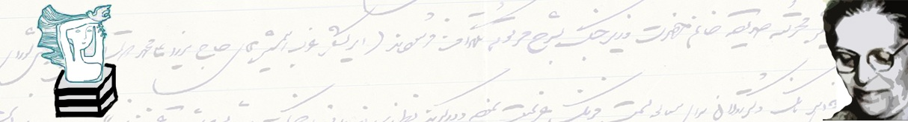

|
|
راه اندازی کتابخانه دیجیتالی صدیقه دولت آبادی
جمعه19 اسفند 1390

تغییر برای برابری - همزمان با هشتم مارس ۱۳۹۰ و روز جهانی زن، کتابخانه دیجیتالی صدیقه دولت آبادی با هدف جمع آوری مجموعه کتابهای حوزه زنان کار خود را آغاز کرد. همان طورکه اداره کنندگان سایت اعلام کرده اند کتابخانه دیجیتالی و تحت وب صدیقه دولت آبادی محلی برای دسترسی همه علاقمندان به کتاب ها و اسناد مربوط به زنان است. آرشیو تاریخی، اسکن، تندیس، خاورمیانه، خشونت، کتاب کتابخانه ، ...از جمله بخش های متنوع این سایت است.
کتابخانه دیجیتال صدیقه دولت آبادیرا می توانید در نشانی زیر ببینید.
پیش تر نیز صفحه کتابخانه صدیقه دولت آبادیروی فیس بوک فعال بوده است.
بر اساس اسناد کتابخانه، کتابخانه صدیقه دولت آبادی در 1383 توسط مرکز فرهنگی زنان، “تشكلي غير دولتي که فعاليت هاي فرهنگي، اجتماعي و پژوهشي خود را در مورد مسائل زنان از سال 1379 آغاز كرده بود و مجوزفعاليت خود را در مرداد 1380 از وزارت فرهنگ و ارشاد اسلامي گرفته بود،”تاسیس شد. فکر تاسیس کتابخانه چند سالی بود که در مرکز فرهنگی زنان شکل گرفته بود و نخستین بار در مراسم 8 مارس 1381، که در پارک لاله تهران برگزار شد، فراخوانی داده شد برای کمک گرفتن از افراد و سازمان های داخلی سرانجام در اسفند 1383 کتابخانه افتتاح شد و جایزه ای به همین نام برای بهترین اثر در حوزه مطالعات زنان نامگذاری شد. کتابخانه تا هنگام پلمب شدن در اردیبهشت 1390 فعال بود.
صديقه دولت آبادي از زنان برابري خواه و فعال در جنبش زنان ايران است كه هم زمان با دوران مشروطه نهادهاي ماندگاري را براي زنان ايراني به جا گذاشت. وي در طول 85 سال زندگي افتخارآميز خويش اولين مدرسه دخترانه، اولين نشريه، اولين انجمن و كتابخانه براي زنان را تاسيس كردهشت مارس 2005، مطابق با 18 اسفند 1383، به یمن سالگرد روز جهانی زن، دو نهال نورس در "مرکز فرهنگی زنانبها" سر برافراشت، "کتابخانه صدیقه دولت آبادی" و جایزه ای به همین نام برای بهترین اثر در حوزه مطالعات زنان.
اطلاعات بیشتر درباره کتابخانه صدیقه دولت آبادی را در لینک زیر ببینید
[http://sedighedolatabadi.org/?p=70->http://sedighedolatabadi.org/?p=70